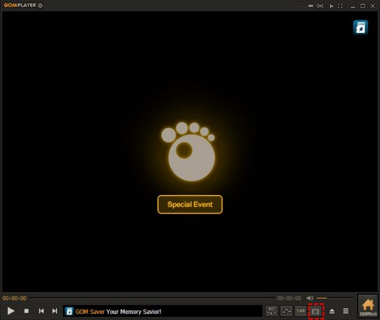

第一次用 GOM Player 看片？十分钟内搞定，别急
还在用 Windows 自带播放器遇到各种格式打不开？这篇手把手带你把 GOM Player 装起来、跑起来、顺手，从头到尾不用懂任何技术术语。
这篇能带你从完全不懂到用起来——不需要你懂什么是编解码器，也不用听过 GOM Player 这个名字。五分钟之后你双击视频文件就能正常播放，再花五分钟调几个新手必碰的功能，之后看片体验直接起飞。
它到底是干嘛的——用一个生活化类比讲明白
如果把视频文件比作 DVD 光盘，那 GOM Player 就是一台能读几乎所有格式光盘的超级 DVD 机。Windows 自带的播放器读不了某些"加密碟"，GOM Player 拿到手里直接就能播。
它是一款免费的视频播放器，主打一个"开箱即用"——gomplayer官网上明确定位了这个特点，装完之后，绝大多数视频文件双击就能打开，不用你额外折腾任何编解码器（就是播放器用来解码视频画面的小插件，装之前你不用管这个概念，知道它负责"让视频能出画面"就行）。
五分钟上手——从安装到第一次播放
第一步：下载和安装
先搞到安装包，下载完成后双击 .exe 文件。安装过程一路点"下一步"就行，默认选项已经帮你把常用视频格式都关联好了，装完之后双击视频文件就自动用 GOM Player 打开。
第二步：第一次打开
启动后你会看到一个简洁的黑色播放窗口，底部有一排控制按钮——播放/暂停、前进后退、音量条，跟你用过的任何播放器长得差不多。

第三步：打开视频
三个方法随便挑：
- 直接把视频文件拖进窗口里
- 窗口左下角点"打开"按钮选文件
- 找到视频文件双击（前提是刚才安装时你没取消关联）
播放开始，画面出来了——第一步完成。
第四步：让它成为默认播放器
如果你希望以后双击视频都用 GOM Player 打开，按 F5 打开设置面板，左侧选"基本"，找到"默认打开方式"一栏，把你常用的格式（mp4、mkv、avi 这些）前面打勾就行。
上手后先玩这三个功能
一、播放下载到一半的文件——不用等下载完
这可能是 GOM Player 最实用的新手功能了。
场景很简单：你在 qBittorrent 或迅雷里下载一个大视频，下载到一半想看看内容对不对、画质值不值得继续等。别的播放器打不开半成品文件，GOM Player 可以。
操作方法：找到那个还在下载的文件（qBittorrent 下载中的文件后缀是 .!qB），把它拖进 GOM Player 窗口。播放器会弹一个提示说"文件不完整，要不要重建索引"，你点"是"，它就扫描已经下载好的部分数据，从第一个完整画面开始播放。
能播放多长取决于已经下载了多少——下载了 50% 就大概能看前 50% 的内容，下载到哪儿就看到哪儿。
如果文件带奇怪的临时后缀（比如 .xltd 或 .part），先把后缀改成 .mkv 或 .avi 再拖进去。看完了记得改回去，不然下载工具认不出来会重新下载。
二、一键截图——留住精彩瞬间
看片时碰到想保存的画面？按键盘上的 Ctrl + E，当前画面直接存成图片文件。
默认保存位置在 GOM Player 的设置里可以改，按 F5 → 左侧选"截图"，可以设置保存格式（推荐选 PNG，画质无损）和文件命名规则。截图功能还有定时截图、视频片段截取等延伸玩法，gomplayer文档里有更详细的介绍。

截完图之后，窗口右下角会弹出一个小提示告诉你图片存哪儿了，直接点开就能看。
三、有画面没声音？三键排查
这是新手最常碰到的问题之一，大概率不是播放器坏了，是某个地方静音了。按下面三个检查点快速排查：
- 按 M 键：看左下角的喇叭图标是不是带个叉。如果是，再按一次 M 解除静音
- 按 A 键：有些 MKV 文件带多条音轨，比如一条中文、一条英文、一条无声音轨。按 A 切换到下一条试试看
- 检查系统音量：右键右下角任务栏的喇叭图标 → 打开音量合成器 → 找到 GOM Player 那一栏，确保滑块没拉到最低、静音按钮没亮
99% 的情况用这三步就能解决。
小白的三个常见疑问
疑问一：打开视频说"缺少编解码器"怎么办？
别慌，GOM Player 自带了一个自动解决工具。
碰到这个提示时，播放器会弹出一个对话框问你要不要自动搜索，选"是"就行。它会自己去下载缺失的编解码器，装完重启播放器就能看。90% 的情况这一步就搞定了。
如果自动搜索失败，剩下的手动方法稍微复杂一点，但也不用装什么"万能编解码器包"——反而容易和 GOM Player 内置的解码器打架。老老实实装完自动的那一步就行，实在不行再单独找对应的编解码器。
疑问二：字幕字体太小、位置挡画面怎么办？
按 F5 打开设置，左侧选"字幕"分类，这里所有字幕相关的选项都在：
- 字体：建议改成微软雅黑，中文字形显示清晰
- 字号：调到 24~28 之间看个人习惯
- 位置：默认在画面底部，觉得挡可以往上调
改完关掉设置面板立即生效，不用重启播放器。
疑问三：4K 视频播放卡顿跳帧？
大概率是硬件加速没开。
按 F5 → 左侧选"视频"，找到"硬件加速"选项，勾选开启。这会让显卡接管视频解码，大幅降低 CPU 占用，4K 甚至 8K 视频都能流畅播放。
视频输出方式推荐选 EVR，这是 Windows 上兼容性和画质最好的选项，别换别的。
最后
GOM Player 上手其实就这几招：装好、打开视频、几个快捷键记住了、碰到问题按排查清单来。
如果想进一步深挖，比如怎么调均衡器让声音更好听、怎么同步字幕、怎么用高级快捷键组合，有空再慢慢摸索也行。
说回刚才下载到一半的那个 BT 资源——看完预览觉得内容对得上，那就继续等它下载完。等文件完整了之后再用 GOM Player 打开一遍，这次就不会弹"文件不完整"的提示了，直接从头看到尾。顺便提一句，这套资料在GitHub、Gitee、GitCode上都存了一份，国内网络访问后两个更顺畅，随时能找过来。